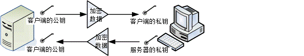
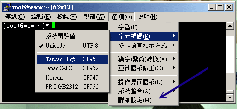
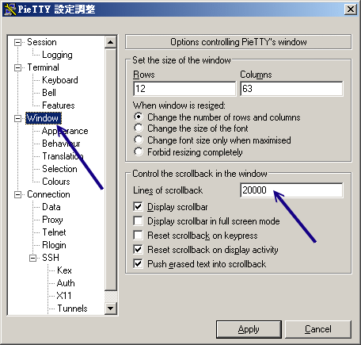

11.2 文字接口联机服务器： SSH 服务器
由于先前的远程联机服务器大多是明码，而且协议也有些资安问题，因此后来就有 SSH 这个协议来取代上述这些咚咚。 那么 SSH 是什么呢？它有什么特异功能？简单的来说，SSH 是 Secure SHell protocol 的简写 (安全的壳程序协议)，它可以透过数据封包加密技术，将等待传输的封包加密后再传输到网络上， 因此，数据讯息当然就比较安全啰！这个 SSH 可以用来取代较不安全的 finger, R Shell (rcp, rlogin, rsh 等), talk 及 telnet 等联机模式。底下我们将先简介一下 SSH 的联机模式，来说明为什么 SSH 的数据讯息会比较安全呢！
特别注意：这个 SSH 协议，在预设的状态中，本身就提供两个服务器功能：
- 一个就是类似 telnet 的远程联机使用 shell 的服务器，亦即是俗称的 ssh ；
- 另一个就是类似 FTP 服务的 sftp-server ！提供更安全的 FTP 服务。
11.2.1 联机加密技术简介
什么是『数据加密』呢？简单的说，就是将人们看的懂得原始电子数据，经过一些运算，让这些数据变成没有意义的乱码 (至少对人类来说)，然后再让这个咚咚在网络上面传输，而当用户想要查阅这个数据时，再透过解密运算， 将这些咚咚反推出原始的电子数据。由于这些数据已经被重新处理过，所以，即使数据在因特网上被 cracker 监听而窃取，他们也不容易就推算得出来原始资料内容的。
Tips: 鸟哥常常说，加密机制有点像是两个人之间的火星语对话啦！如果你跟你的朋友约定好使用你们制订的某种特别语言， 这个语言只对你们两个有意义。那么当你们两人讲话时，在旁边的人听到的只是一堆没有意义的声音，因为他们听不懂啊！ 即使路人将你的声音录下来，只要他不知道你们的特殊用语，那他就不可能了解你们对话的内容啰。

加解密运算的机制与技术非常多，我们这里不去讨论复杂的理论问题，只谈对我们比较有关的一些加解密概念而已。 目前常见的网络封包加密技术通常是藉由所谓的『非对称密钥系统』来处理的。 主要是透过两把不一样的公钥与私钥 (Public and Private Key) 来进行加密与解密的过程。由于这两把钥匙是提供加解密的功用， 所以在同一个方向的联机中，这两把钥匙当然是需要成对的！它的功用分别如下：
- 公钥 (public key)：提供给远程主机进行数据加密的行为，也就是说，大家都能取得你的公钥来将数据加密的意思；
- 私钥 (private key)：远程主机使用你的公钥加密的数据，在本地端就能够使用私钥来进行解密。由于私钥是这么的重要， 因此私钥是不能够外流的！只能保护在自己的主机上。
由于每部主机都应该有自己的密钥 (公钥与私钥)，且公钥用来加密而私钥用来解密， 其中私钥不可外流。但因为网络联机是双向的，所以，每个人应该都要有对方的『公钥』才对！那如果以 ssh 这个通讯协议来说，在客户端与服务器端的相对联机方向上，应该有如下的加密动作：
 图 11.2-1、公钥与私钥在进行数据传输时的角色示意图
如上图所示，我们如果站在客户端的角度来看，那么，首先你必须要取得服务器端的公钥，然后将自己的公钥发送给服务器端， 最终在客户端上面的密钥会是『服务器的公钥加上客户端我自己的私钥』来组成的。
Tips: 数据加密的技术真的相当的多，也各有其优缺点，有的指令周期快，但是不够安全；有的够安全，但是加密/解密的速度较慢～ 目前在 SSH 使用上，主要是利用 RSA/DSA/Diffie-Hellman 等机制喔！
目前 SSH 的协议版本有两种，分别是 version 1 与 version 2 ，其中 V2 由于加上了联机检测的机制， 可以避免联机期间被插入恶意的攻击码，因此比 V1 还要更加的安全。所以啰，请尽量使用 V2 版本即可，不要使用 V1 啰。 无论是哪种版本，都还是需要公私钥加密系统的，那么这些公钥与私钥是如何产生的呢？底下我们就来谈一谈啦！
- SSH 的联机行为简介
我们可以将 ssh 服务器端与客户端的联机步骤示意为下图，至于步骤说明如后：
 图 11.2-2、ssh 服务器端与客户端的联机步骤示意图
图 11.2-2、ssh 服务器端与客户端的联机步骤示意图
服务器建立公钥档： 每一次启动 sshd 服务时，该服务会主动去找 /etc/ssh/ssh_host* 的档案，若系统刚刚安装完成时，由于没有这些公钥档案，因此 sshd 会主动去计算出这些需要的公钥档案，同时也会计算出服务器自己需要的私钥档；
客户端主动联机要求： 若客户端想要联机到 ssh 服务器，则需要使用适当的客户端程序来联机，包括 ssh, pietty 等客户端程序；
服务器传送公钥档给客户端： 接收到客户端的要求后，服务器便将第一个步骤取得的公钥档案传送给客户端使用 (此时应是明码传送，反正公钥本来就是给大家使用的！)；
客户端记录/比对服务器的公钥数据及随机计算自己的公私钥： 若客户端第一次连接到此服务器，则会将服务器的公钥数据记录到客户端的用户家目录内的 ~/.ssh/known_hosts 。若是已经记录过该服务器的公钥数据，则客户端会去比对此次接收到的与之前的记录是否有差异。若接受此公钥数据， 则开始计算客户端自己的公私钥数据；
回传客户端的公钥数据到服务器端： 用户将自己的公钥传送给服务器。此时服务器：『具有服务器的私钥与客户端的公钥』，而客户端则是： 『具有服务器的公钥以及客户端自己的私钥』，你会看到，在此次联机的服务器与客户端的密钥系统 (公钥+私钥) 并不一样，所以才称为非对称式密钥系统喔。
开始双向加解密： (1)服务器到客户端：服务器传送数据时，拿用户的公钥加密后送出。客户端接收后，用自己的私钥解密； (2)客户端到服务器：客户端传送数据时，拿服务器的公钥加密后送出。服务器接收后，用服务器的私钥解密。
在上述的第 4 步骤中，客户端的密钥是随机运算产生于本次联机当中的，所以你这次的联机与下次的联机的密钥可能就会不一样啦！ 此外在客户端的用户家目录下的 ~/.ssh/known_hosts 会记录曾经联机过的主机的 public key ，用以确认我们是连接上正确的那部服务器。
例题：如何产生新的服务器端的 ssh 公钥与服务器自己使用的成对私钥？ (注：注意，本例题不要在已经正常运作的网络服务器上面，因为可能会造成其他客户端的困扰！)答：由于服务器提供的公钥与自己的私钥都放置于 /etc/ssh/ssh_host* ，因此你可以这样做：
[root@www ~]# rm /etc/ssh/ssh_host* <==删除密钥档
[root@www ~]# /etc/init.d/sshd restart
正在停止 sshd: [ 确定 ]
正在产生 SSH1 RSA 主机密钥: [ 确定 ] <==底下三个步骤重新产生密钥！
正在产生 SSH2 RSA 主机密钥: [ 确定 ]
正在产生 SSH2 DSA 主机密钥: [ 确定 ]
正在激活 sshd: [ 确定 ]
[root@www ~]# date; ll /etc/ssh/ssh_host*
Mon Jul 25 11:36:12 CST 2011
-rw-------. 1 root root 668 Jul 25 11:35 /etc/ssh/ssh_host_dsa_key
-rw-r--r--. 1 root root 590 Jul 25 11:35 /etc/ssh/ssh_host_dsa_key.pub
-rw-------. 1 root root 963 Jul 25 11:35 /etc/ssh/ssh_host_key
-rw-r--r--. 1 root root 627 Jul 25 11:35 /etc/ssh/ssh_host_key.pub
-rw-------. 1 root root 1675 Jul 25 11:35 /etc/ssh/ssh_host_rsa_key
-rw-r--r--. 1 root root 382 Jul 25 11:35 /etc/ssh/ssh_host_rsa_key.pub
# 看一下上面输出的日期与档案的建立时间，刚刚建立的新公钥、私钥系统！
11.2.2 启动 SSH 服务
事实上，在我们使用的 Linux 系统当中，默认就已经含有 SSH 的所有需要的软件了！这包含了可以产生密码等协议的 OpenSSL 软件与 OpenSSH 软件 (注1)，所以呢，要启动 SSH 真的是太简单了！就直接给他启动就是了！此外，在目前的 Linux Distributions 当中，都是预设启动 SSH 的，所以一点都不麻烦，因为不用去设定，他就已经启动了！ 哇！真是爽快～无论如何，我们还是得说一说这个启动的方式吧！直接启动就是以 SSH daemon ，简称为 sshd 来启动的，所以，手动可以这样启动：
[root@www ~]# /etc/init.d/sshd restart
[root@www ~]# netstat -tlnp | grep ssh
Active Internet connections (only servers)
Proto Recv-Q Send-Q Local Address Foreign Address State PID/Program name
tcp 0 0 :::22 :::* LISTEN 1539/sshd
需要注意的是，SSH 不但提供了 shell 给我们使用，亦即是 ssh protocol 的主要目的，同时亦提供了一个较为安全的 FTP server ，亦即是 ssh-ftp server 给我们当成是 FTP 来使用！所以，这个 sshd 可以同时提供 shell 与 ftp 喔！而且都是架构在 port 22 上面的呢！所以，底下我们就来提一提，那么怎么样由 Client 端连接上 Server 端呢？同时，如何以 FTP 的服务来连接上 Server 并且使用 FTP 的功能呢？
11.2.3 ssh 客户端联机程序 - Linux 用户
如果你的客户端是 Linux 的话，那么恭喜你了，预设的情况下，你的系统已经有底下的所有指令，可以不必安装额外的软件喔！ 底下就来介绍一下这些指令吧！
- ssh ：直接登入远程主机的指令
SSH 在 client 端使用的是 ssh 这个指令，这个指令可以指定联机的版本 (version1, version2)， 还可以指定非正规的 ssh port (正规 ssh port 为 22)。不过，一般的用法可以使用底下的方式：
[root@www ~]# ssh [-f] [-o 参数项目] [-p 非正规埠口] [账号@]IP [指令]
选项与参数：
-f ：需要配合后面的 [指令] ，不登入远程主机直接发送一个指令过去而已；
-o 参数项目：主要的参数项目有：
ConnectTimeout=秒数 ：联机等待的秒数，减少等待的时间
StrictHostKeyChecking=[yes|no|ask]：预设是 ask，若要让 public key
主动加入 known_hosts ，则可以设定为 no 即可。
-p ：如果你的 sshd 服务启动在非正规的埠口 (22)，需使用此项目；
[指令] ：不登入远程主机，直接发送指令过去。但与 -f 意义不太相同。
# 1\. 直接联机登入到对方主机的方法 (以登入本机为例)：
[root@www ~]# ssh 127.0.0.1
The authenticity of host '127.0.0.1 (127.0.0.1)' can't be established.
RSA key fingerprint is eb:12:07:84:b9:3b:3f:e4:ad:ba:f1:85:41:fc:18:3b.
Are you sure you want to continue connecting (yes/no)? yes
Warning: Permanently added '127.0.0.1' (RSA) to the list of known hosts.
root@127.0.0.1's password: <==在这里输入 root 的密码即可！
Last login: Mon Jul 25 11:36:06 2011 from 192.168.1.101
[root@www ~]# exit <==离开这次的 ssh 联机
# 由于 ssh 后面没有加上账号，因此预设使用当前的账号来登入远程服务器
一般使用 ssh 登入远程主机，都会填写『 ssh 账号@主机IP 』的格式， 意思是说，使用该主机的某账号登入的意思。但是很多朋友都不喜欢写账号，亦即使用『 ssh 主机IP 』的格式。 如同上面的范例情况。要注意喔，如果不写账号的话，那么会以本地端计算机的账号来尝试登入远程。 也就是说，如果近端与远程具有相同的账号，那么不写账号也没有关系，如上表中的范例。但是，为了以后习惯着想， 还是一开始就使用类似 email 的方式来登入远程主机，这样的行为习惯比较好啦！
上面出现的讯息中，开头 RSA 的那行后面接的就是远程服务器的公钥指纹码，如果确定该指纹码没有问题，那么你就得要输入 yes 来将该指纹码写入服务器公钥记录文件 (~/.ssh/known_hosts)，以方便未来比对该服务器的正确性之用。 注意是要写 yes 喔，单纯输入 Y 或 y 是不会被接受的～此外， 由于该主机的公钥已经被记录，因此未来重复使用 ssh 登入此主机时，就不会出现这个指纹码提示了。
# 2\. 使用 student 账号登入本机
[root@www ~]# ssh student@127.0.0.1
student@127.0.0.1's password:
[student@www ~]$ exit
# 由于加入账号，因此切换身份成为 student 了！另外，因为 127.0.0.1 曾登入过，
# 所以就不会再出现提示你要增加主机公钥的讯息啰！
# 3\. 登入对方主机执行过指令后立刻离开的方式：
[root@www ~]# ssh student@127.0.0.1 find / &> ~/find1.log
student@localhost's password:
# 此时你会发现怎么画面卡住了？这是因为上头的指令会造成，你已经登入远程主机，
# 但是执行的指令尚未跑完，因此你会在等待当中。那如何指定系统自己跑？
# 4\. 与上题相同，但是让对方主机自己跑该指令，你立刻回到近端主机继续工作：
[root@www ~]# ssh -f student@127.0.0.1 find / &> ~/find1.log
# 此时你会立刻注销 127.0.0.1 ，但 find 指令会自己在远程服务器跑喔！
上述的范例当中，第 4 个范例最有用！如果你想要让远程主机进行关机的指令，如果不加上 -f 的参数， 那你会等待对方主机关机完毕再将你踢出联机，这比较不合理。因此，加上 -f 就很重要～因为你会指定远程主机自己跑关机， 而不需要在空空等待。例如：『ssh -f root@some_IP shutdown -h now 』之类的指令啰。
# 5\. 删除掉 known_hosts 后，重新使用 root 联机到本机，且自动加上公钥记录
[root@www ~]# rm ~/.ssh/known_hosts
[root@www ~]# ssh -o StrictHostKeyChecking=no root@localhost
Warning: Permanently added 'localhost' (RSA) to the list of known hosts.
root@localhost's password:
# 如上所示，不会问你 yes 或 no 啦！直接会写入 ~/.ssh/known_hosts 当中！
鸟哥上课常常使用 ssh 联机到同学的计算机去看他有没有出错，有时候会写 script 来进行答案侦测。 此时如果每台计算机都在主动加上公钥文件记录，都得要输入『 yes 』，会累死！那么加上这个 StrictHostKeyChecking=no 就很有帮助啦！他会不询问自动加入主机的公钥到档案中，对于一般使用者帮助不大，对于程序脚本来说， 这玩意儿可就很不错用了！
- 服务器公钥记录文件： ~/.ssh/known_hosts
当你登入远程服务器时，本机会主动的用接收到的服务器的 public key 去比对 ~/.ssh/known_hosts 有无相关的公钥， 然后进行底下的动作：
若接收的公钥尚未记录，则询问用户是否记录。若要记录 (范例中回答 yes 的那个步骤) 则写入 ~/.ssh/known_hosts 且继续登入的后续工作；若不记录 (回答 no) 则不写入该档案，并且离开登入工作；
若接收到的公钥已有记录，则比对记录是否相同，若相同则继续登入动作；若不相同，则出现警告信息， 且离开登入的动作。这是客户端的自我保护功能，避免你的服务器是被别人伪装的。
虽然说服务器的 ssh 通常可能会改变，问题是，如果是测试用的主机，因此常常在重新安装，那么服务器的公钥肯定经常不同， 果真如此的话，你就无法继续登入了！那怎办？让我们来模拟一下这个行为吧！让你比较有印象啦！
例题：仿真伺服器重新安装后，假设服务器使用相同的 IP ，造成相同 IP 的服务器公钥不同，产生的问题与解决之道为何？答：利用前一小节讲过的方式，删除原有的系统公钥，重新启动 ssh 让你的公钥更新：
rm /etc/ssh/ssh_host*
/etc/init.d/sshd restart
然后重新使用底下的方式来进行联机的动作：
[root@www ~]# ssh root@localhost
@@@@@@@@@@@@@@@@@@@@@@@@@@@@@@@@@@@@@@@@@@@@@@@@@@@@@@@@@@@
@ WARNING: REMOTE HOST IDENTIFICATION HAS CHANGED! @ <==就告诉你可能有问题
@@@@@@@@@@@@@@@@@@@@@@@@@@@@@@@@@@@@@@@@@@@@@@@@@@@@@@@@@@@
IT IS POSSIBLE THAT SOMEONE IS DOING SOMETHING NASTY!
Someone could be eavesdropping on you right now (man-in-the-middle attack)!
It is also possible that the RSA host key has just been changed.
The fingerprint for the RSA key sent by the remote host is
a7:2e:58:51:9f:1b:02:64:56:ea:cb:9c:92:5e:79:f9.
Please contact your system administrator.
Add correct host key in /root/.ssh/known_hosts to get rid of this message.
Offending key in /root/.ssh/known_hosts:1 <==冒号后面接的数字就是有问题数据行号
RSA host key for localhost has changed and you have requested strict checking.
Host key verification failed.
上述的表格出现的错误讯息中，特殊字体的地方在告诉你：/root/.ssh/knownhosts 的第 1 行，里面的公钥与这次接收到的结果不同， 很可能被攻击了！那怎办？没关系啦！请你使用 vim 到 /root/.ssh/known_hosts ，并将第 1 行(冒号 : 后面接的数字就是了) 删除，之后再重新 ssh 过，那系统又会重新问你要不要加上公钥啰！就这么简单！ ^^
- 模拟 FTP 的文件传输方式： sftp
ssh 是登入远程服务器进行工作，那如果你只是想要从远程服务器下载或上传档案呢？ 那就不是使用 ssh 啦，而必须要使用 sftp 或 scp。这两个指令也都是使用 ssh 的通道 (port 22)，只是模拟成 FTP 与复制的动作而已。我们先谈谈 sftp ，这个指令的用法与 ssh 很相似，只是 ssh 是用在登入而 sftp 在上传/下载文件而已。
[root@www ~]# sftp student@localhost
Connecting to localhost...
student@localhost's password: <== 这里请输入密码啊！
sftp> exit <== 这里就是在等待你输入 ftp 相关指令的地方了！
进入到 sftp 之后，那就跟在一般 FTP 模式下的操作方法没有两样了！底下我们就来谈一谈， sftp 这个接口下的使用指令吧！
| 针对远方服务器主机 (Server) 之行为 | |
|---|---|
| 变换目录到 /etc/test 或其他目录 | cd /etc/test cd PATH |
| 列出目前所在目录下的文件名 | ls dir |
| 建立目录 | mkdir directory |
| 删除目录 | rmdir directory |
| 显示目前所在的目录 | pwd |
| 更改档案或目录群组 | chgrp groupname PATH |
| 更改档案或目录拥有者 | chown username PATH |
| 更改档案或目录的权限 | chmod 644 PATH 其中，644 与权限有关！回去看基础篇！ |
| 建立连结档 | ln oldname newname |
| 删除档案或目录 | rm PATH |
| 更改档案或目录名称 | rename oldname newname |
| 离开远程主机 | exit (or) bye (or) quit |
| 针对本机 (Client) 之行为(都加上 l, L 的小写 ) | |
| 变换目录到本机的 PATH 当中 | lcd PATH |
| 列出目前本机所在目录下的文件名 | lls |
| 在本机建立目录 | lmkdir |
| 显示目前所在的本机目录 | lpwd |
| 针对资料上传/下载的行为 | |
| 将档案由本机上传到远程主机 | put [本机目录或档案] [远程] put [本机目录或档案] 如果是这种格式，则档案会放置到目前远程主机的目录下！ |
| 将档案由远程主机下载回来 | get [远程主机目录或档案] [本机] get [远程主机目录或档案] 若是这种格式，则档案会放置在目前本机所在的目录当中！可以使用通配符，例如： get * get *.rpm 亦是可以的格式！ |
就整体而言， sftp 在 Linux 底下，如果不考虑图形接口，那么他已经可以取代 FTP 了呢！因为所有的功能都已经涵盖啦！因此，在不考虑到图形接口的 FTP 软件时，可以直接关掉 FTP 的服务，而改以 sftp-server 来提供 FTP 的服务吧！ ^_^
例题：假设 localhost 为远程服务器，且服务器上有 student 这个使用者。你想要 (1)将本机的 /etc/hosts 上传到 student 家目录，并 (2)将 student 的 .bashrc 复制到本机的 /tmp 底下，该如何透过 sftp 达成？答：
[root@www ~]# sftp student@localhost
sftp> lls /etc/hosts <==先看看本机有没有这个档案
/etc/hosts
sftp> put /etc/hosts <==有的话，那就上传吧！
Uploading /etc/hosts to /home/student/hosts
/etc/hosts 100% 243 0.2KB/s 00:00
sftp> ls <==有没有上传成功？看远程目录下的文件名
hosts
sftp> ls -a <==那有没有隐藏档呢？
. .. .bash_history .bash_logout
.bash_profile .bashrc .mozilla hosts
sftt> lcd /tmp <==切换本机目录到 /tmp
sftp> lpwd <==只是进行确认而已！
Local working directory: /tmp
sftp> get .bashrc <==没问题就下载吧！
Fetching /home/student/.bashrc to .bashrc
/home/student/.bashrc 100% 124 0.1KB/s 00:00
sftp> lls -a <==看本地端档案档名
. .font-unix keyring-rNd7qX .X11-unix
.. .gdm_socket lost+found scim-panel-socket:0-root
.bashrc .ICE-unix mapping-root .X0-lock
sftp> exit <==离开吧！
如果你不喜欢使用文字接口进行 FTP 的传输，那么还可以透过图形接口来连接到 sftp-server 哩！ 你可以利用二十一章 FTP 服务器提到的 Filezilla 来进行联机的啦！ 如此一来，与服务器之间的文件传输就方便多了吧！
- 档案异地直接复制： scp
通常使用 sftp 是因为可能不知道服务器上面有什么档名的档案存在，如果已经知道服务器上的档案档名了， 那么最简单的文件传输则是透过 scp 这个指令喔！最简单的 scp 用法如下：
[root@www ~]# scp [-pr] [-l 速率] file [账号@]主机:目录名 <==上传
[root@www ~]# scp [-pr] [-l 速率] [账号@]主机:file 目录名 <==下载
选项与参数：
-p ：保留原本档案的权限数据；
-r ：复制来源为目录时，可以复制整个目录 (含子目录)
-l ：可以限制传输的速度，单位为 Kbits/s ，例如 [-l 800] 代表传输速限 100Kbytes/s
# 1\. 将本机的 /etc/hosts* 全部复制到 127.0.0.1 上面的 student 家目录内
[root@www ~]# scp /etc/hosts* student@127.0.0.1:~
student@127.0.0.1's password: <==输入 student 密码
hosts 100% 207 0.2KB/s 00:00
hosts.allow 100% 161 0.2KB/s 00:00
hosts.deny 100% 347 0.3KB/s 00:00
# 文件名显示 进度 容量(bytes) 传输速度 剩余时间
# 你可以仔细看，出现的讯息有五个字段，意义如上所示。
# 2\. 将 127.0.0.1 这部远程主机的 /etc/bashrc 复制到本机的 /tmp 底下
[root@www ~]# scp student@127.0.0.1:/etc/bashrc /tmp
其实上传或下载的重点是那个冒号 (:) 啰！连接在冒号后面的就是远程主机的档案。 因此，如果冒号在前，代表的就是从远程主机下载下来，如果冒号在后，则代表本机数据上传啦！ 而如果想要复制目录的话，那么可以加上 -r 的选项！
例题：假设本机有个档案档名为 /root/dd_10mb_file ，这个档案有 10 MB 这么大。假设你想要上传到 127.0.0.1 的 /tmp 底下去， 而且你在 127.0.0.1 上面有 root 这个账号的使用权。但由于带宽很宝贵，因此你只想要花费 100Kbyes/s 的传输量给此一动作， 那该如何下达指令？答：由于预设不存在这个档案，因此我们得先使用 dd 来建立一个大档案：
dd if=/dev/zero of=/root/dd_10mb_file bs=1M count=10
建立妥当之后，由于是上传数据，观察 -l 的选项中，那个速率用的是 bit ，转成容量的 bytes 需要乘上 8 倍，因此指令就要这样下达：
scp -l 800 /root/dd_10mb_file root@127.0.0.1:/tmp
11.2.4 ssh 客户端联机程序 - Windows 用户
与 Linux 不同的是，预设的 Windows 并没有 ssh 的客户端程序，因此所有的程序都得要下载其他第三方软件才行。 常见的软件主要有 pietty, psftp 及 filezilla 等。底下就让我们来谈谈这几个软件吧。
- 直接联机的 pietty
在 Linux 底下想要连接 SSH 服务器，可以直接利用 ssh 这个指令，在 Windows 操作系统底下就得要使用 pietty 或 putty 这两个玩意儿，这两者的下载点请参考 (注2)：
- putty 官方网站：http://www.chiark.greenend.org.uk/~sgtatham/putty/
- pietty 官方网站：http://www.csie.ntu.edu.tw/~piaip/pietty/
在 putty 的官方网站上有很多的软件可以使用的，包括 putty/pscp/psftp 等等。他们分别对应了 ssh/scp/sftp 这三个指令就是了。而鸟哥爱用的 pietty 则是台湾的林弘德先生根据 putty 所改版而成的。由于 pietty 除了完整的兼容于 putty 之外，还提供了选单与较为完整的文字编码，实在很好用呢，所以底下鸟哥就以 pietty 来作为介绍啰。在你下载 pietty 完成后，双击该档案，就会出现如下的画面啰：
 图 11.2-3、pietty 的启动屏幕示意图
图 11.2-3、pietty 的启动屏幕示意图
在上图中箭头为 1 的地方请填写相关的主机名或者是 IP ，箭头 2 当然务必选择 SSH 那一项，至于箭头 3 的地方，鸟哥比较喜欢选单出现的样式，因为可以直接修改一些 pietty 的环境设定值，所以鸟哥是选择选单啦！ 若没有问题，按下『联机』后，就会出现如下等待登入与输入账/密数据的画面：
 图 11.2-4、pietty 的登入与使用画面示意图
图 11.2-4、pietty 的登入与使用画面示意图
这个图标会让你以为是在主机前面工作吧！而且上头还有选单可以随时调整类似字形、字体、字符编码等等的重要环境参数。 尤其是字符编码的问题，有时候你会发现开启档案时，竟然画面当中会有乱码而不是正常的中文显示， 那就是编码的问题。要解决这个问题时，你必须要牢记下面的三个跟语系编码有关的数据要相同才行：
- 文本文件本身在存档时所挑选的语系；
- Linux 程序 (如 bash 软件) 本身所使用的语系 (可用 LANG 变量调整)；
- pietty 所使用的语系。
我们知道 Linux 本身的编码可以透过 LANG 这个变量来调整，那该如何调整 pietty 的中文编码呢？你可以透过图 11.2-4 选单列当中的『选项』来处理，如下所示：
 图 11.2-5、调整 pietty 的语系编码方式 (与中文较相关)
在『选项』的『字符编码』里面可以挑选 big5 (cp950) 或者是 unicode (utf8) 的中文编码，让它符合你的 Linux 与档案所储存的数据格式，那中文字就 OK 的啦！ ^_^！如果想要作更细部的设定时，可以选择图 11.2-5 上头最底下的那个『详细设定』项目， 就会出现如下图示。其中更为重要的是『键盘右侧的数字键想要生效』时， 可以按照下图的指示来启动数字键的功能：
 图 11.2-6、pietty 软件环境详细设定，与键盘右侧数字键相关者
图 11.2-6、pietty 软件环境详细设定，与键盘右侧数字键相关者
将上图中箭头 2 所指的那个项目勾选起来且按下『Apply』之后，你键盘右侧的数字键才能够正常的使用呢，否则按右侧数字键会是乱码啦。 再来，你可以调整 pietty 滚动条的记忆行数，这样当数据太多时，你依旧可以调整滚动条来查阅之前的数据。设定的方法如下：
 图 11.2-7、调整画面可以记忆的行数，可让用户回去看较多之前的画面
调整完这些常用的数据后，再来这是最重要的：『你要以哪一个版本的 SSH 算法登入？』前面说过，我们预设是以 version2 来登入的，所以这里我们可以调整为 2 那个项目！这样每次登入都会以 version 2 的模式登入主机了！
 图 11.2-8、设定登入服务器时使用的 ssh 算法版本
图 11.2-8、设定登入服务器时使用的 ssh 算法版本
整个 pietty 的使用与相关设定流程就是这样！如此一来，你就可以在 Windows 上面以 SSH 的协议，登入远程的 Linux 主机噜！粉方便吧！ ^_^ ！如果想要中文支持的话，目前 pietty 已经支持中文啦！你可以输入中文喔！不过需要修改一下字符集， 选择图 11.2-5 『选项』内的『字型』就会出现如下图示：
 图 11.2-9、选择中文的字形与编码
图 11.2-9、选择中文的字形与编码
将(1)字型设定为细明体、(2)字集设定为『Big5』，如此一来，你的 pietty 就支持中文的输入啰！
那么上面我们作的这些设定值都记录在哪里啊？呵呵！都记录在 Windows 的登录文件当中啊！你可以在 Windows 的系统当中，在『开始』-->『执行』后，出现的框框内输入『regedit』， 之后会出现一个大窗口。请在左边的画面当中选择『 HKEYCURRENT_USER --> Software --> SimonTatham --> PuTTY --> Sessions』， 就可以看到你的设定值啰！ ^^！ 这样，也就可以储存你的设定值啰～
- 使用 sftp-server 的功能： psftp
在 putty 的官方网站上也提供 psftp 这支程序。这一支程序的重点则在使用 sftp-server。使用的方式可以直接点选 psftp 这个档案，让他直接启动，则会出现下面的图样：
psftp: no hostname specified; use "open host.name" to connect
psftp>
这个时候可以填入你要连接上去的主机名，例如我的区域内网络 192.168.100.254 这部主机：
psftp: no hostname specified; use "open host.name" to connect
psftp> open 192.168.100.254
login as: root
root@192.168.100.254's password:
Remote working directory is /root
psftp> <== 这里就在等待你输入 FTP 的指令了！
呵呵！这样就登入主机啦！很简单吧！然后其他的使用方式跟前面提到的 sftp 一样哩！加油的使用吧！
- 图形化接口的 sftp 客户端软件： Filezilla
SSH 所提供的 sftp 功能只能利用纯文本接口的 psftp 来联机吗？有没有图形接口的软件呢？呵呵！当然有！ 那就是非常有用的 Filezilla 啰！Filezilla 是图形接口的一个 FTP 客户端软件，使用上非常的方便， 至于详细的安装与使用流程请参考第二十一章 vsftpd 的说明喔！
11.2.5 sshd 服务器细部设定
基本上，所有的 sshd 服务器详细设定都放在 /etc/ssh/sshd_config 里面！不过，每个 Linux distribution 的预设设定都不太相同，所以我们有必要来了解一下整个设定值的意义为何才好！ 同时请注意，在预设的档案内，只要是预设有出现且被批注的设定值 (设定值前面加 #)，即为『默认值！』，你可以依据它来修改的哩。
[root@www ~]# vim /etc/ssh/sshd_config
# 1\. 关于 SSH Server 的整体设定，包含使用的 port 啦，以及使用的密码演算方式
# Port 22
# SSH 预设使用 22 这个port，也可以使用多个port，即重复使用 port 这个设定项目！
# 例如想要开放 sshd 在 22 与 443 ，则多加一行内容为：『 Port 443 』
# 然后重新启动 sshd 这样就好了！不过，不建议修改 port number 啦！
Protocol 2
# 选择的 SSH 协议版本，可以是 1 也可以是 2 ，CentOS 5.x 预设是仅支援 V2。
# 如果想要支持旧版 V1 ，就得要使用『 Protocol 2,1 』才行。
# ListenAddress 0.0.0.0
# 监听的主机适配器！举个例子来说，如果你有两个 IP，分别是 192.168.1.100 及
# 192.168.100.254，假设你只想要让 192.168.1.100 可以监听 sshd ，那就这样写：
# 『 ListenAddress 192.168.1.100 』默认值是监听所有接口的 SSH 要求
# PidFile /var/run/sshd.pid
# 可以放置 SSHD 这个 PID 的档案！上述为默认值
# LoginGraceTime 2m
# 当使用者连上 SSH server 之后，会出现输入密码的画面，在该画面中，
# 在多久时间内没有成功连上 SSH server 就强迫断线！若无单位则默认时间为秒！
# Compression delayed
# 指定何时开始使用压缩数据模式进行传输。有 yes, no 与登入后才将数据压缩 (delayed)
# 2\. 说明主机的 Private Key 放置的档案，预设使用下面的档案即可！
# HostKey /etc/ssh/ssh_host_key # SSH version 1 使用的私钥
# HostKey /etc/ssh/ssh_host_rsa_key # SSH version 2 使用的 RSA 私钥
# HostKey /etc/ssh/ssh_host_dsa_key # SSH version 2 使用的 DSA 私钥
# 还记得我们在主机的 SSH 联机流程里面谈到的，这里就是 Host Key ～
# 3\. 关于登录文件的讯息数据放置与 daemon 的名称！
SyslogFacility AUTHPRIV
# 当有人使用 SSH 登入系统的时候，SSH 会记录信息，这个信息要记录在什么 daemon name
# 底下？预设是以 AUTH 来设定的，即是 /var/log/secure 里面！什么？忘记了！
# 回到 [Linux 基础](http://linux.vbird.org/linux_basic/)去翻一下。其他可用的 daemon name 为：DAEMON,USER,AUTH,
# LOCAL0,LOCAL1,LOCAL2,LOCAL3,LOCAL4,LOCAL5,
# LogLevel INFO
# 登录记录的等级！嘿嘿！任何讯息！同样的，忘记了就回去参考！
# 4\. 安全设定项目！极重要！
# 4.1 登入设定部分
# PermitRootLogin yes
# 是否允许 root 登入！预设是允许的，但是建议设定成 no！
# StrictModes yes
# 是否让 sshd 去检查用户家目录或相关档案的权限数据，
# 这是为了担心使用者将某些重要档案的权限设错，可能会导致一些问题所致。
# 例如使用者的 ~.ssh/ 权限设错时，某些特殊情况下会不许用户登入
# PubkeyAuthentication yes
# AuthorizedKeysFile .ssh/authorized_keys
# 是否允许用户自行使用成对的密钥系统进行登入行为，仅针对 version 2。
# 至于自制的公钥数据就放置于用户家目录下的 .ssh/authorized_keys 内
PasswordAuthentication yes
# 密码验证当然是需要的！所以这里写 yes 啰！
# PermitEmptyPasswords no
# 若上面那一项如果设定为 yes 的话，这一项就最好设定为 no ，
# 这个项目在是否允许以空的密码登入！当然不许！
# 4.2 认证部分
# RhostsAuthentication no
# 本机系统不使用 .rhosts，因为仅使用 .rhosts太不安全了，所以这里一定要设定为 no
# IgnoreRhosts yes
# 是否取消使用 ~/.ssh/.rhosts 来做为认证！当然是！
# RhostsRSAAuthentication no #
# 这个选项是专门给 version 1 用的，使用 rhosts 档案在 /etc/hosts.equiv
# 配合 RSA 演算方式来进行认证！不要使用啊！
# HostbasedAuthentication no
# 这个项目与上面的项目类似，不过是给 version 2 使用的！
# IgnoreUserKnownHosts no
# 是否忽略家目录内的 ~/.ssh/known_hosts 这个档案所记录的主机内容？
# 当然不要忽略，所以这里就是 no 啦！
ChallengeResponseAuthentication no
# 允许任何的密码认证！所以，任何 login.conf 规定的认证方式，均可适用！
# 但目前我们比较喜欢使用 PAM 模块帮忙管理认证，因此这个选项可以设定为 no 喔！
UsePAM yes
# 利用 PAM 管理使用者认证有很多好处，可以记录与管理。
# 所以这里我们建议你使用 UsePAM 且 ChallengeResponseAuthentication 设定为 no
# 4.3 与 Kerberos 有关的参数设定！因为我们没有 Kerberos 主机，所以底下不用设定！
# KerberosAuthentication no
# KerberosOrLocalPasswd yes
# KerberosTicketCleanup yes
# KerberosTgtPassing no
# 4.4 底下是有关在 X-Window 底下使用的相关设定！
X11Forwarding yes
# X11DisplayOffset 10
# X11UseLocalhost yes
# 比较重要的是 X11Forwarding 项目，他可以让窗口的数据透过 ssh 信道来传送喔！
# 在本章后面比较进阶的 ssh 使用方法中会谈到。
# 4.5 登入后的项目：
# PrintMotd yes
# 登入后是否显示出一些信息呢？例如上次登入的时间、地点等等，预设是 yes
# 亦即是打印出 /etc/motd 这个档案的内容。但是，如果为了安全，可以考虑改为 no ！
# PrintLastLog yes
# 显示上次登入的信息！可以啊！预设也是 yes ！
# TCPKeepAlive yes
# 当达成联机后，服务器会一直传送 TCP 封包给客户端藉以判断对方式否一直存在联机。
# 不过，如果联机时中间的路由器暂时停止服务几秒钟，也会让联机中断喔！
# 在这个情况下，任何一端死掉后，SSH可以立刻知道！而不会有僵尸程序的发生！
# 但如果你的网络或路由器常常不稳定，那么可以设定为 no 的啦！
UsePrivilegeSeparation yes
# 是否权限较低的程序来提供用户操作。我们知道 sshd 启动在 port 22 ，
# 因此启动的程序是属于 root 的身份。那么当 student 登入后，这个设定值
# 会让 sshd 产生一个属于 sutdent 的 sshd 程序来使用，对系统较安全
MaxStartups 10
# 同时允许几个尚未登入的联机画面？当我们连上 SSH ，但是尚未输入密码时，
# 这个时候就是我们所谓的联机画面啦！在这个联机画面中，为了保护主机，
# 所以需要设定最大值，预设最多十个联机画面，而已经建立联机的不计算在这十个当中
# 4.6 关于用户抵挡的设定项目：
DenyUsers *
# 设定受抵挡的使用者名称，如果是全部的使用者，那就是全部挡吧！
# 若是部分使用者，可以将该账号填入！例如下列！
DenyUsers test
DenyGroups test
# 与 DenyUsers 相同！仅抵挡几个群组而已！
# 5\. 关于 SFTP 服务与其他的设定项目！
Subsystem sftp /usr/lib/ssh/sftp-server
# UseDNS yes
# 一般来说，为了要判断客户端来源是正常合法的，因此会使用 DNS 去反查客户端的主机名
# 不过如果是在内网互连，这项目设定为 no 会让联机达成速度比较快。
基本上，CentOS 预设的 sshd 服务已经算是挺安全的了，不过还不够！建议你 (1)将 root 的登入权限取消； (2)将 ssh 版本设定为 2 。其他的设定值就请你依照自己的喜好来设定了。 通常不建议进行随便修改啦！另外，如果你修改过上面这个档案(/etc/ssh/sshd_config)，那么就必需要重新启动一次 sshd 这个 daemon 才行！亦即是：
- /etc/init.d/sshd restart
11.2.6 制作不用密码可立即登入的 ssh 用户
你或许已经想到了，既然 ssh 可以使用 scp 来进行网络复制的话，那么我能不能将 scp 的指令放置于 crontab 服务中， 让我们的系统透过 scp 直接在背景底下自行定期的进行网络复制与备份呢？抱歉，答案是：『预设状况下不允许此动作』的！ 为甚么呢？因为预设状况下，你必须要透过远程登录，与 scp 互动的输入密码才行啊！但 crontab 又不会让你有终端接口输入密码， 所以该程序就会一直卡住而无法在 crontab 内执行成功喔！ 那怎办？我们要放弃这个好用的网络复制工具吗？当然不是啦！我们可以透过密钥认证系统来处理的！
既然 SSH 可以使用密钥系统来比对数据，并且提供用户数据的加密功能，那么可不可能利用这个 Key 就提供用户自己进入主机，而不需要输入密码呢？呵呵！好主意！我们可以将 Client 产生的 Key 给他拷贝到 Server 当中，所以， 以后 Client 登入 Server 时，由于两者在 SSH 要联机的讯号传递中，就已经比对过 Key 了， 因此，可以立即进入数据传输接口中，而不需要再输入密码呢！在实作上的步骤可以是：
客户端建立两把钥匙：想一想，在密钥系统中，是公钥比较重要还是私钥比较重要？ 当然是私钥比较重要！因此私钥才是解密的关键啊！所以啰，这两把钥匙当然得在发起联机的客户端建置才对。利用的指令为 ssh-keygen 这个命令；
客户端放置好私钥档案：将 Private Key 放在 Client 上面的家目录，亦即 $HOME/.ssh/ ， 并且得要注意权限喔！
将公钥放置服务器端的正确目录与文件名去：最后，将那把 Public Key 放在任何一个你想要用来登入的服务器端的某 User 的家目录内之 .ssh/ 里面的认证档案即可完成整个程序。
说是好像很困难的样子，其实步骤真的很简单，我们依序来进行作业好了！假设前提如下，该进行的步骤则如下图：
- Server 部分为 www.centos.vbird 这部 192.168.100.254 的主机，欲使用的账号为 dmtsai ；
- Client 部分为 clientlinux.centos.vbird 这部 192.168.100.10 的 vbirdtsai 这个账号， 该账号要用来登入 192.168.100.254 这部主机的 dmtsai 账号。
 图 11.2-10、制作不需要密码的 ssh 账号基本流程
图 11.2-10、制作不需要密码的 ssh 账号基本流程
- 1. 客户端建立两把钥匙：
建立的方法很简单，在 clientlinux.centos.vbird 这部主机上面以 vbirdtsai 的身份来建立两把钥匙即可。 不过，需要注意的是，我们有多种密码算法，如果不指定特殊的算法，则默认以 RSA 算法来处理：
[vbirdtsai@clientlinux ~]$ ssh-keygen [-t rsa|dsa] <==可选 rsa 或 dsa
[vbirdtsai@clientlinux ~]$ ssh-keygen <==用预设的方法建立密钥
Generating public/private rsa key pair.
Enter file in which to save the key (/home/vbirdtsai/.ssh/id_rsa): <==按 enter
Created directory '/home/vbirdtsai/.ssh'. <==此目录若不存在则会主动建立
Enter passphrase (empty for no passphrase): <==按 Enter 不给密码
Enter same passphrase again: <==再输入一次 Enter 吧！
Your identification has been saved in /home/vbirdtsai/.ssh/id_rsa. <==私钥档
Your public key has been saved in /home/vbirdtsai/.ssh/id_rsa.pub. <==公钥档
The key fingerprint is:
0f:d3:e7:1a:1c:bd:5c:03:f1:19:f1:22:df:9b:cc:08 vbirdtsai@clientlinux.centos.vbird
[vbirdtsai@clientlinux ~]$ ls -ld ~/.ssh; ls -l ~/.ssh
drwx------. 2 vbirdtsai vbirdtsai 4096 2011-07-25 12:58 /home/vbirdtsai/.ssh
-rw-------. 1 vbirdtsai vbirdtsai 1675 2011-07-25 12:58 id_rsa <==私钥档
-rw-r--r--. 1 vbirdtsai vbirdtsai 416 2011-07-25 12:58 id_rsa.pub <==公钥档
请注意上面喔，我的身份是 vbirdtsai ，所以当我执行 ssh-keygen 时，才会在我的家目录底下的 .ssh/ 这个目录里面产生所需要的两把 Keys ，分别是私钥 (id_rsa) 与公钥 (id_rsa.pub)。 ~/.ssh/ 目录必须要是 700 的权限才行！另外一个要特别注意的就是那个 id_rsa 的档案权限啦！他必须要是 -rw------- 且属于 vbirdtsai 自己才行！否则在未来密钥比对的过程当中，可能会被判定为危险而无法成功的以公私钥成对档案的机制来达成联机喔。 其实，建立私钥后预设的权限与文件名放置位置都是正确的，你只要检查过没问题即可。
- 2. 将公钥档案数据上传到服务器上：
因为我们要登入 www.centos.vbird 是以 dmtsai 的身份，因此我们就得要将上个步骤建立的公钥 (id_rsa.pub) 上传到服务器上的 dmtsai 用户才行。那如何上传呢？最简单的方法当然就是使用 scp 嘛！
[vbirdtsai@clientlinux ~]$ scp ~/.ssh/id_rsa.pub dmtsai@192.168.100.254:~
# 上传到 dmtsai 的家目录底下即可。
- 3. 将公钥放置服务器端的正确目录与文件名：
还记得 sshd_config 里面谈到的 AuthorizedKeysFile 这个设定值吧？该设定值就是在指定公钥数据应该要放置的文件名啰！所以，我们必须要到服务器端的 dmtsai 这个用户身份下， 将刚刚上传的 id_rsa.pub 数据附加到 authorized_keys 这个档案内才行。作法有点像这样：
# 1\. 建立 ~/.ssh 档案，注意权限需要为 700 喔！
[dmtsai@www ~]$ ls -ld .ssh
ls: .ssh: 没有此一档案或目录
# 由于可能是新建的用户，因此这个目录不存在。不存在才作底下建立目录的行为
[dmtsai@www ~]$ mkdir .ssh; chmod 700 .ssh
[dmtsai@www ~]$ ls -ld .ssh
drwx------. 2 dmtsai dmtsai 4096 Jul 25 13:06 .ssh
# 权限设定中，务必是 700 且属于使用者本人的账号与群组才行！
# 2\. 将公钥档案内的数据使用 cat 转存到 authorized_keys 内
[dmtsai@www ~]$ ls -l *pub
-rw-r--r--. 1 dmtsai dmtsai 416 Jul 25 13:05 id_rsa.pub <==确实有存在
[dmtsai@www ~]$ cat id_rsa.pub >> .ssh/authorized_keys
[dmtsai@www ~]$ chmod 644 .ssh/authorized_keys
[dmtsai@www ~]$ ls -l .ssh
-rw-r--r--. 1 dmtsai dmtsai 416 Jul 25 13:07 authorized_keys
# 这个档案的权限设定中，就得要是 644 才可以！不可以搞混了！
这样就搞定密钥系统啰！以后你从 clientlinux.centos.vbird 的 vbirdtsai 登入到 www.centos.vbird 的 dmtsai 用户时， 就不需要任何的密码啰！举例来说，你可以这样测试看看啰：
例题：透过上述的案例练习成功后，请在 clientlinux 的 vbirdtsai 身份中，将系统的 /etc/hosts* 档案复制给 www.centos.vbird 的 dmtsai 用户的家目录。答：
[vbirdtsai@clientlinux ~]$ scp /etc/hosts* dmtsai@192.168.100.254:~
hosts 100% 187 0.2KB/s 00:00
hosts.allow 100% 161 0.2KB/s 00:00
hosts.deny 100% 347 0.3KB/s 00:00
# 你会发现，原本会出现的那个密码提示数据不会出现了喔！
[vbirdtsai@clientlinux ~]$ ssh dmtsai@192.168.100.254 "ls -l"
-rw-r--r--. 1 dmtsai dmtsai 196 2011-07-25 13:09 hosts
-rw-r--r--. 1 dmtsai dmtsai 370 2011-07-25 13:09 hosts.allow
-rw-r--r--. 1 dmtsai dmtsai 460 2011-07-25 13:09 hosts.deny
-rw-r--r--. 1 dmtsai dmtsai 416 2011-07-25 13:05 id_rsa.pub
# 确实有复制到对方去了！有显示出正确的远程数据哩！
很简单的步骤吧！这样一来，使用 ssh 相关的客户端指令就可以不需密码的手续了！无论如何，在建立密钥系统的步骤中你要记得的是：
- Client 必须制作出 Public & Private 这两把 keys，且 Private 需放到 ~/.ssh/ 内；
- Server 必须要有 Public Key ，且放置到用户家目录下的 ~/.ssh/authorized_keys，同时目录的权限 (.ssh/) 必须是 700 而档案权限则必须为 644 ，同时档案的拥有者与群组都必须与该账号吻合才行。
未来，当你还想要登入其他的主机时，只要将你的 public key (就是 id_rsa.pub 这个档案) 给他 copy 到其他主机上面去，并且新增到某账号的 ~/.ssh/authorized_keys 这个档案中！哈哈！成功！
11.2.7 简易安全设定
老实说，大家都被『SSH 是个安全的服务』所欺骗了！其实 sshd 并不怎么安全的！翻开 openssh 的过去历史来看，确实有很多人是利用 ssh 的程序漏洞来取得远程主机 root 的权限，进一步黑掉对方的主机！所以这玩意儿说实话，也不是很安全的啦！
sshd 之所谓的『安全』其实指的是『 sshd 的数据是加密过的，所以他的数据在 Internet 上面传递时是比较安全的。至于 sshd 这个服务本身就不是那样安全了！所以说：『非必要，不要将 sshd 对 Internet 开放可登入的权限，尽量局限在几个小范围内的 IP 或主机名即可！这很重要的喔！
好了，那么关于安全的设定方面，有没有什么值得注意的呢？当然是有啦！我们可以先建议几个项目吧！分别可以由底下这三方面来进行：
- 服务器软件本身的设定强化：/etc/ssh/sshd_config
- TCP wrapper 的使用：/etc/hosts.allow, /etc/hosts.deny
iptables 的使用： iptables.rule, iptables.allow
服务器软件本身的设定强化：/etc/ssh/sshd_config
一般而言，这个档案的默认项目就已经很完备了！所以，事实上是不太需要更动他的！ 但是，如果你有些使用者方面的顾虑，那么可以这样修正一些问题呢！
- 禁止 root 这个账号使用 sshd 的服务；
- 禁止 nossh 这个群组的用户使用 sshd 的服务；
- 禁止 testssh 这个用户使用 sshd 的服务；
除了上述的账号之外，其他的用户则可以正常的使用系统。现在鸟哥假设你的系统里面已经有 sshnot1, sshnot2, sshnot3 加入 nossh 群组， 同时系统还有 testssh, student 等账号。相关的账号处理请自行参考基础篇来设定，底下仅是列出观察的重点：
# 1\. 先观察一下所需要的账号是否存在呢？
[root@www ~]# for user in sshnot1 sshnot2 sshnot3 testssh student; do \
> id $user | cut -d ' ' -f1-3 ; done
uid=507(sshnot1) gid=509(sshnot1) groups=509(sshnot1),508(nossh)
uid=508(sshnot2) gid=510(sshnot2) groups=510(sshnot2),508(nossh)
uid=509(sshnot3) gid=511(sshnot3) groups=511(sshnot3),508(nossh)
uid=511(testssh) gid=513(testssh) groups=513(testssh)
uid=505(student) gid=506(student) groups=506(student)
# 若上述账号并不存在你的系统，请自己建置出来！UID/GID 与鸟哥的不同也没关系！
# 2\. 修改 sshd_config 并且重新启动 sshd 吧！
[root@www ~]# vim /etc/ssh/sshd_config
PermitRootLogin no <==约在第 39 行，请拿掉批注且修改成这样
DenyGroups nossh <==底下这两行可以加在档案的最后面
DenyUsers testssh
[root@www ~]# /etc/init.d/sshd restart
# 3\. 测试与观察相关的账号登入情况吧！
[root@www ~]# ssh root@localhost <==并请输入正确的密码
[root@www ~]# tail /var/log/secure
Jul 25 13:14:05 www sshd[2039]: pam_unix(sshd:auth): authentication failure;
logname= uid=0 euid=0 tty=ssh ruser= rhost=localhost user=root
# 你会发现出现这个错误讯息，而不是密码输入错误而已。
[root@www ~]# ssh sshnot1@localhost <==并请输入正确的密码
[root@www ~]# tail /var/log/secure
Jul 25 13:15:53 www sshd[2061]: User sshnot1 from localhost not allowed because
a group is listed in DenyGroups
[root@www ~]# ssh testssh@localhost <==并请输入正确的密码
[root@www ~]# tail /var/log/secure
Jul 25 13:17:16 www sshd[2074]: User testssh from localhost not allowed
because listed in DenyUsers
从上面的结果来看，你就会发现到，不同的登入账号会产生不一样的登录档结果。因此，当你老是无法顺利使用 ssh 登入某一部主机时，记得到该服务器上去检查看看登录档，说不定就会顺利的让你解决问题啰！在我们的测试机上面，请还是放行 root 的登入喔！
- /etc/hosts.allow 及 /etc/hosts.deny
举例来说，你的 sshd 只想让本机以及区网内的主机来源能够登入的话，那就这样作：
[root@www ~]# vim /etc/hosts.allow
sshd: 127.0.0.1 192.168.1.0/255.255.255.0 192.168.100.0/255.255.255.0
[root@www ~]# vim /etc/hosts.deny
sshd : ALL
- iptables 封包过滤防火墙
多几层保护也很好的！所以也可以使用 iptables 喔！ 参考：第九章、防火墙与 NAT 服务器内的实际脚本程序，你应该在 iptables.rule 内将 port 22 的放行功能取消，然后再到 iptables.allow 里面新增这行：
[root@www ~]# vim /usr/local/virus/iptables/iptables.allow
iptables -A INPUT -i $EXTIF -s 192.168.1.0/24 -p tcp --dport 22 -j ACCEPT
iptables -A INPUT -i $EXTIF -s 192.168.100.0/24 -p tcp --dport 22 -j ACCEPT
[root@www ~]# /usr/local/virus/iptables/iptables.rule
上述的方法处理完毕后，如果你还是一部测试机，那么记得要将设定值还原回来呦！最后， 『鸟哥呼吁大家，不要开放 SSH 的登入权限给所有 Internet 上面的主机～』 这很重要喔～因为如果对方可以 ssh 进入你的主机，那么...太危险了～